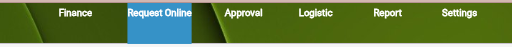

Market List Tutorial
Market List adalah daftar kebutuhan harian yang biasanya berisi bahan makanan segar yang harus dibeli setiap hari dari pasar atau supplier (terutama untuk dapur).
Buka Module Request Online
Klik Button Transaction -
Pilih (ML) Market List -
Maka nanti Menu Utamanya seperti ini
- Untuk Membuat Market List kita bisa Klik Button New
Nanti Form utamanya seperti ini
Transaction Date sudah Otomatis mengikuti tanggal hari ini -
Description kita bisa isi Deskripsi untuk ML tersebut -
Department To kita isi Departmentnya -
Dibagian Warehouse kita perlu perhatikan, sama seperti PR disini jika kita isi Warehousenya maka Barang yang di Request akan masuk ke Inventory, dan jika kita kosongi maka akan menjadi Expenses atau barang langsung pakai -
Delivery Date kita bisa isi tanggal berapa barang itu diharapkan Datang -
Lalu di Notes kita bisa isi jika ada Catatan tambahan -
Kalau sudah kita bisa Klik Save -
Maka nanti akan muncul Form untuk mengisi Productnya
- Di Product Name kita ketik saja Barang yang kita inginkan maka nanti akan muncul Lookupnya
- Di Unit kita bisa sesuaikan
- Qty kita isi Kuantiti Barang yang diinginkan
- Di Type kita bisa pilih Warehouse jika barang itu ingin dijadikan Stock Gudang, dan bisa pilih Department jika ingin langsung dipakai
- Lalu kita bisa isi Notes jika ada Catatan tambahan
- Kita bisa Klik Apply untuk menambahkan Product lainnya
- Kalau sudah kita Klik OK
Kalau sudah Sesuai kita bisa Klik Send

Kita pastikan Klik Button Send untuk mengirim Form ML tadi agar bisa di Proses -